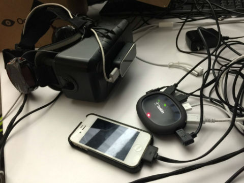

Bright Screen

I recently created a Virtual Reality Movie Theatre demo during a hackathon at work. It was a really fun week. I had to learn Unity, the Leap Motion SDK, and the Oculus Unity SDK.
Originally I was going to develop this project using WebVR compatible browsers, these experiments just didn't run nearly as fast as other demos. You can find the browser-based experiment here. You'll need an Oculus DK2 and a WebVR compatible browser to view it.
After extensive time on the web-vr-discuss@mozilla.org mailing list I learned that this wouldn't be changing in the short term. I almost chose something else to do for my hackweek project, but ultimately just went for it. Learning Unity ended up being way easier than I thought. It didn't hurt at all that Oculus and Leap Motion integrations were pretty much drag and drop solutions.
The Hardware
You'll notice I had to use a USB hub as there weren't enough USB slots in my new MacBook Pro to have the Leap Motion, DK2, and my iPhone* hard-lined.
* There's some unpolished code to control the movie with mobile devices.
Videos
The following is a short video of a moment of using the Leap Motion to feel like you have the hands of a robot.
Here's a longer video showing sitting in different seats within the theatre. If you want it with an Oculus Headset you'll notice that the video has stereoscopic 3D playback support.
I am working to get permission from my employer Brightcove to open source the demo. I'll upload a demo once that gets approved. So keep an eye on my github and this blog for news.